수수하고 울퉁불퉁한 조개 하나.
그 안에 숨어있던 건 작은 진주와, 오구리의 고른 마음.
"예쁜 건 금방 눈에 띄지만, 소중한 건 천천히 알게 되기도 한단다.
네가 가져온 건 조개만이 아니야. 고른 마음도 함께 왔구나."
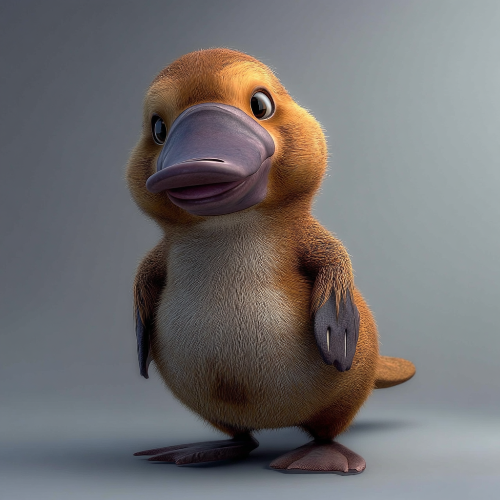
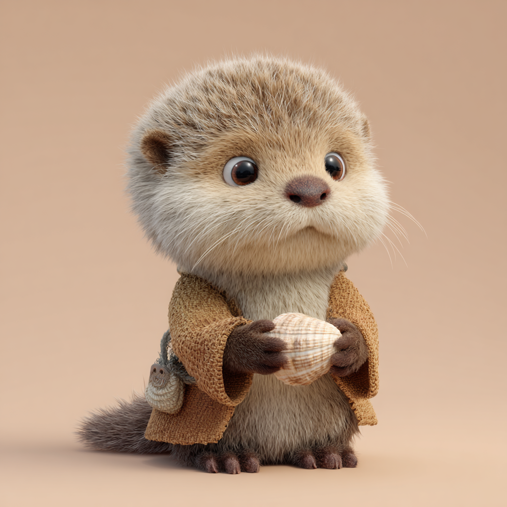
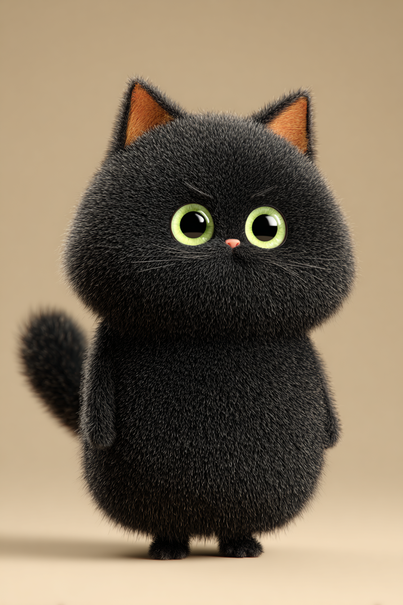
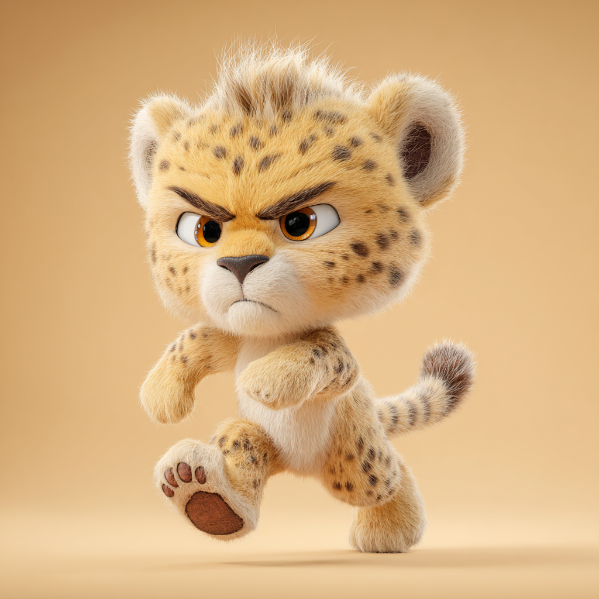
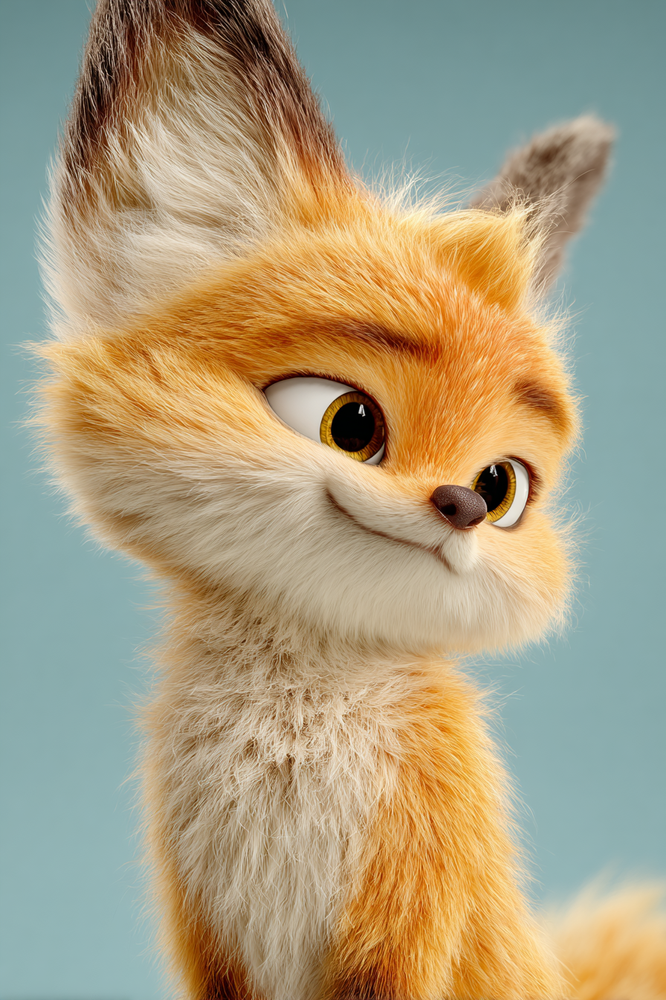
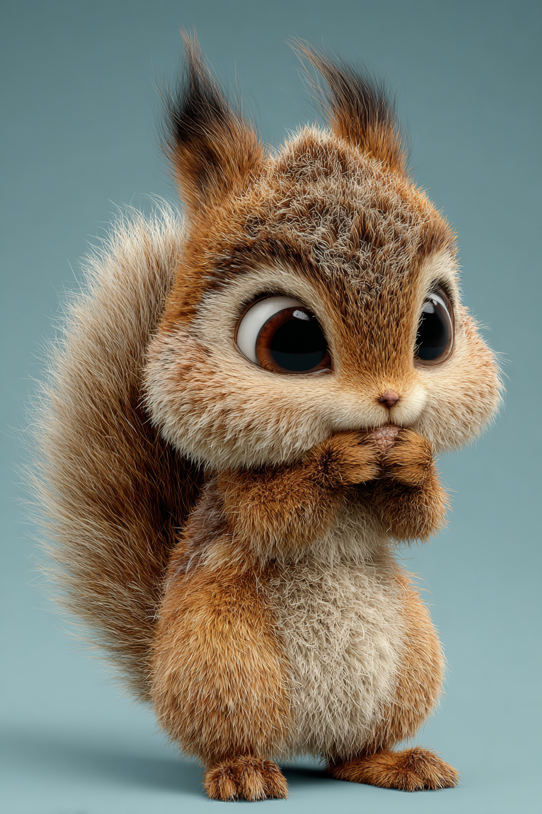
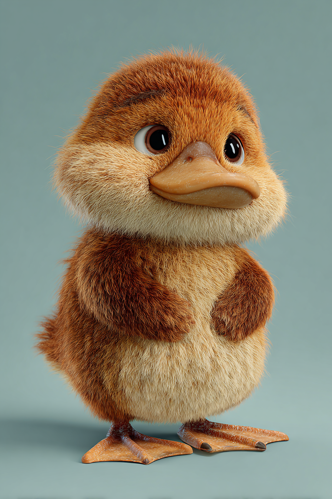
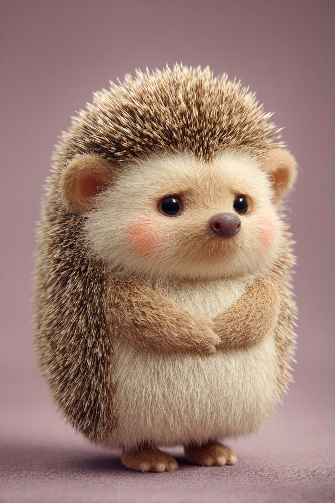
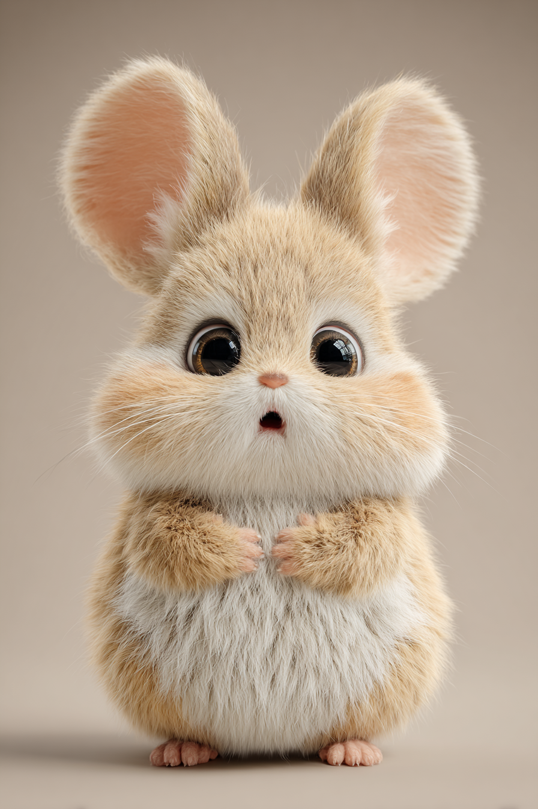
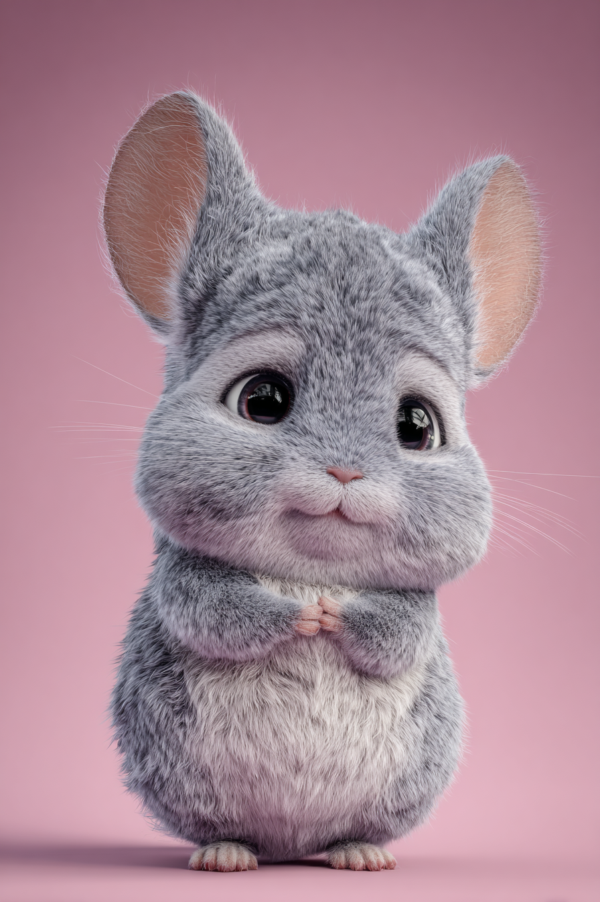
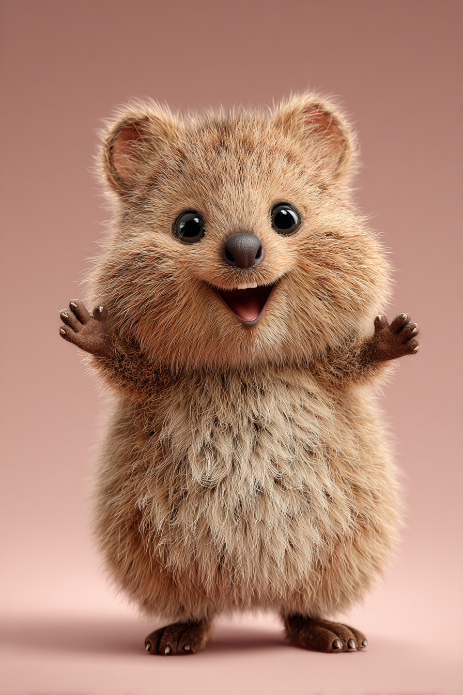
| 씬 | 타임 | 배경 / 액션 | 대사 | 카메라 | 연출포인트 | 프롬프트 |
|---|---|---|---|---|---|---|
| S-01 | 0:00 | 이른 아침 몽글숲 마을 전경. 안개가 살짝 낀 마을, 나무 사이 오두막들. 새소리, 바람 소리. | — | 와이드샷 → 천천히 줌인 | 세계관 도입 | |
| S-02 | 0:12 | 오구리가 집 앞 나무 옆에 혼자 앉아 돌을 만지작거림. 심심한 표정. | — | 미디엄샷 | 주인공 도입 | |
| S-03 | 0:20 | 해피쿼카엘리자베스3세가 팔짝팔짝 뛰며 달려온다. 숨차면서도 신이 나있다. | "오구리야! 오구리야아!! 있잖아, 있잖아!!" | 달리는 방향 패닝샷 | 에너지 주입 | |
| S-04 | 0:28 | 해피쿼카가 오구리 앞에 탁 멈춰서 눈 반짝이며 말함. 오구리 고개를 든다. | "오늘이 달봉이아재 생일이래!! 우리 선물 드리자!" | 투샷 → 오구리 클로즈업 | 사건 트리거 | |
| S-05 | 0:38 | 소식을 들은 모든 친구들(고봉이·치토스·우야·토리·덕심이·도찌·삐까·찐찔이)이 모여든다. | "달봉이아재 생일이야?" / "선물 뭐 드리지?" / "내가 제일 좋은 거 드릴 거야!" | 그룹샷. 캐릭터 차례로 등장 컷. | 전원 등장 | |
| S-06 | 0:55 | 해피쿼카 팔을 번쩍 듦. "제일 예쁜 조개 선물하자!" 치토스가 이미 뛰기 시작한다. | "제일 예쁜 조개 선물하자!!" / "나 먼저 간다!!" | 군중 리액션 컷 | 목표 설정 |
| 씬 | 타임 | 배경 / 액션 | 대사 | 카메라 | 연출포인트 | 프롬프트 |
|---|---|---|---|---|---|---|
| S-07 | 1:20 | 눈부신 해변 전경. 파도 소리. 모래사장에 크고 작은 조개들이 반짝임. 아이들 줄지어 도착. | "와아— 조개 진짜 많다!" | 와이드샷 → 조개 클로즈업 | 배경 설정 | |
| S-08 | 1:32 | 치토스가 전속력으로 달리며 조개를 집었다 놓기를 반복. 너무 빨라서 정작 좋은 걸 놓친다. | "이것도 예뻐! 아 이게 더 커! 이건 반짝여!" | 치토스 달리기 팬샷 + 모래 날리는 이펙트 | 코믹 릴리프 | |
| S-09 | 1:42 | 고봉이가 눈 가늘게 뜨고 반짝이는 흰 조개 하나를 집어든다. 흡족한 표정. | "역시 나는 눈이 좋아. 이게 제일이야." | 고봉이 로우앵글. 빛 반사 이펙트. | 대비 캐릭터 확립 | |
| S-10 | 1:52 | 토리가 팔에 조개를 잔뜩 쌓아올린다. 흘러내리는 걸 겨우 붙잡으며. | "이것도 예쁘고… 이것도 예쁘고… 이것도…" | 미디엄샷. 조개 탑이 흔들리는 코믹 컷. | 코믹 릴리프 | |
| S-11 | 2:02 | 도찌가 조개 하나를 들여다보고, 두드려보고, 귀에 대고, 냄새까지 맡아본다. 매우 신중. | "음… 이 소리…" | 도찌 클로즈업. 꼼꼼한 동작 연속 컷. | 복선 — 달봉이와 닮음 | |
| S-12 | 2:14 | 오구리가 혼자 조금 떨어진 구석에서 조개를 뒤지고 있다. 뭔가를 발견하고 걸음을 멈춘다. | — | 오구리 뒷모습 → 발밑 클로즈업 | 핵심 발견 전조 | |
| S-13 | 2:22 | 오구리 손이 울퉁불퉁하고 수수한 갈색 조개를 들어올린다. 전혀 반짝이지 않음. 그런데 오구리가 눈을 떼지 못한다. | (혼잣말) "… 이거 왠지 마음에 걸리네." | 조개 익스트림 클로즈업. 오구리 눈 클로즈업. | ★ 핵심 오브젝트 첫 등장 | |
| S-14 | 2:36 | 삐까가 살금살금 다가와 오구리 조개를 보더니 "나도 이게 좋아 보여"라고 말한다. | "… 나도 이게 좋아 보여. 왠지 모르겠지만." | 투샷. 오구리와 삐까 나란히. | 첫 번째 지지자 |
| 씬 | 타임 | 배경 / 액션 | 대사 | 카메라 | 연출포인트 | 프롬프트 |
|---|---|---|---|---|---|---|
| S-15 | 2:50 | 우야가 자기 예쁜 조개를 들고 오다가 오구리 조개를 보고 고개를 갸웃함. 친절하지만 오구리를 흔드는 말. | "오구리야, 다른 거 더 찾아볼까? 달봉이아재한테 더 예쁜 걸 드리고 싶지 않아?" | 우야 → 오구리 반응 컷 | 내면 갈등 촉발 | |
| S-16 | 3:02 | 오구리가 손의 조개와 우야의 조개를 번갈아 본다. 우야 조개는 분홍빛에 윤기. 오구리 조개는 그냥 갈색. | — | 두 조개 나란히 비교 컷. 오구리 표정 클로즈업. | 시각적 대비 강조 | |
| S-17 | 3:10 | 고봉이가 지나가며 오구리 조개를 보고 말없이 코웃음. 치토스도 "그게 선물이야?" 눈빛. 오구리 어깨 살짝 움츠러듦. | (치토스) "오구리 거는 좀… 그렇지?" | 오구리 시점에서 보는 주관적 숏 | 감정 깊어지는 포인트 | |
| S-18 | 3:22 | 오구리가 조개를 모래에 내려놓으려다 멈춘다. 삐까가 오구리 팔을 살짝 잡는다. | (삐까) "… 그냥 이걸로 가자." | 오구리 손 클로즈업. 내려놓으려다 멈추는 순간. | 선택의 순간 1 | |
| S-19 | 3:32 | 오구리가 잠시 눈을 감는다. 그리고 조개를 다시 손에 꼭 쥔다. 아직 자신 없지만 눈에 결심이 보인다. | — | 오구리 얼굴 미디엄 클로즈업. 손에 쥔 조개 인서트 컷. | 내면 결심 — 대사 없이 연기로 | |
| S-20 | 3:44 | 아이들이 각자 조개를 들고 달봉이 집으로 향함. 해피쿼카 앞서 뛴다. 오구리는 뒤에서 조개를 꼭 쥐고 걷는다. | "파티 시작이야아아!" | 행진 컷. 오구리 꼬리 컷으로 연결. | 장면 전환 |
| 씬 | 타임 | 배경 / 액션 | 대사 | 카메라 | 연출포인트 | 프롬프트 |
|---|---|---|---|---|---|---|
| S-21 | 4:00 | 꽃과 풍선으로 꾸며진 달봉이 집 마당. 해피쿼카가 테이블에 음식을 차림. 달봉이가 낡은 외투 입고 차를 마신다. | (달봉이) "오, 다들 왔구나." | 마당 전경 와이드샷. 달봉이 등장 미디엄샷. | 파티 분위기 설정 | |
| S-22 | 4:12 | 아이들이 달봉이에게 "생일 축하해요!!" 외친다. 달봉이가 흐뭇하게 웃는다. | "생일 축하해요!!" / "달봉이아재 몇 살이에요?" / "비밀이야~" | 군중 리액션 → 달봉이 클로즈업 | 따뜻한 분위기 | |
| S-23 | 4:22 | 선물 시간. 아이들이 차례차례 달봉이에게 조개를 내민다. 서로 자랑하는 분위기. | "제가 제일 반짝이는 거 골랐어요!" / "저는 제일 크고 멋진 걸요!" | 각 캐릭터 선물 전달 몽타주 | 경쟁적 분위기 최고조 | |
| S-24 | 4:38 | 아이들이 다 드리고 나자 오구리만 남는다. 모두의 시선이 오구리에게 향한다. | — | 오구리에게 몰리는 시선 컷. 표정 클로즈업. | 긴장감 최고조 | |
| S-25 | 4:48 | 오구리가 눈을 질끈 감았다 뜨고, 수수한 조개를 두 손으로 달봉이에게 내민다. 목소리가 약간 떨린다. | "달봉이아재… 저는… 더 예쁜 걸 드리고 싶었는데… 이게 왠지 달봉이아재한테 드리고 싶었어요." | 오구리 얼굴 클로즈업 → 조개 건네는 손 클로즈업 | ★ 감정 정점. 핵심 씬. | |
| S-26 | 5:02 | 달봉이가 조개를 손바닥에 올려놓고 조용히 바라본다. 말 없이 의미 있는 미소. 오구리는 불안한 눈빛. | — | 달봉이 손 위 조개 클로즈업. 달봉이 표정 클로즈업. | 달봉이 반응 — 대사 없이 |
| 씬 | 타임 | 배경 / 액션 | 대사 | 카메라 | 연출포인트 | 프롬프트 |
|---|---|---|---|---|---|---|
| S-27 | 5:10 | 달봉이가 조개를 양손으로 감싸 쥐더니, 손가락으로 가볍게 톡 — 톡 — 두드린다. 주변이 조용해진다. | — | 달봉이 손 익스트림 클로즈업. 톡톡 손가락 디테일. | ★ BGM 페이드 아웃 → 정적 | |
| S-28 | 5:20 | 조개가 천천히 열린다. 그 안에서 작고 맑게 빛나는 진주 하나가 드러난다. 진주에서 부드러운 빛이 퍼져나간다. | — | 조개 열리는 슬로모션. 진주 빛 이펙트. 주변 얼굴에 빛 반사. | ★★ 핵심 클라이맥스. 음악 전환 | |
| S-29 | 5:28 | 아이들 리액션 몽타주. 치토스: "엥?!" 눈 커짐. 고봉이: 입 못 다뭄. 우야: 놀라며 오구리를 봄. 토리 고개 끄덕. 덕심이 손뼉. 찐찔이 입 떡 벌어짐. 해피쿼카 펄쩍 뜀. | "엥?!" / "어??" / "와아~!" / "말했잖아 달봉이아재는 뭔가 다르다고!" | 빠른 리액션 컷 몽타주 | 개성 살린 리액션 몽타주 | |
| S-30 | 5:38 | 오구리가 멍하니 진주를 바라본다. 삐까가 오구리 손을 꼭 잡는다. 오구리 눈에 눈물이 살짝 — 슬프지 않은, 따뜻한 눈물. | — | 오구리 얼굴 클로즈업. 눈 안의 진주빛 반사. | 감정 최고점 |
| 씬 | 타임 | 배경 / 액션 | 대사 | 카메라 | 연출포인트 | 프롬프트 |
|---|---|---|---|---|---|---|
| S-31 | 6:00 | 달봉이가 진주와 조개를 나란히 손바닥에 올려 오구리에게 내보인다. 천천히, 차분하게 말한다. | "예쁜 건 금방 눈에 띄지만, 소중한 건 천천히 알게 되기도 한단다." | 달봉이 손 위 진주+조개 클로즈업 → 달봉이 얼굴 클로즈업 | ★ 핵심 대사 1 | |
| S-32 | 6:12 | 달봉이가 조용히 오구리를 바라보며 두 번째 말을 한다. 오구리가 눈을 크게 뜬다. | "네가 가져온 건 조개만이 아니야. 고른 마음도 함께 왔구나." | 달봉이 → 오구리 투샷. 따뜻한 조명. | ★ 핵심 대사 2 | |
| S-33 | 6:22 | 오구리가 눈가를 닦고 씩 웃는다. 삐까가 "나 알아봤잖아!" 하며 뿌듯해한다. | (오구리) "…감사해요, 달봉이아재." (삐까) "나 알아봤잖아!!" |
오구리 클로즈업. 주변 반응 그룹샷. | 감정 해소 | |
| S-34 | 6:32 | 우야가 오구리 옆으로 다가와 눈이 마주친다. 말없이 어깨를 툭 친다. 오구리가 웃는다. | (우야) "…미안." (오구리) "아니야, 괜찮아." | 우야-오구리 투샷. | 부수적 화해 | |
| S-35 | 6:42 | 도찌가 달봉이에게 "저도 조개 두드려봤어요"라고 조용히 말한다. 달봉이가 빙긋 웃으며 도찌 머리를 쓰다듬는다. | (도찌) "저도 조개 두드려봤어요…" (달봉이) "그래, 도찌도 마음으로 골랐구나." |
달봉이-도찌 투샷. | 복선 회수 (도찌의 꼼꼼함) | |
| S-36 | 6:52 | 파티가 시작된다. 해피쿼카 "파티 시작이야아!" 외치며 모두 음식 테이블로 달려간다. 달봉이가 진주를 꼭 쥐고 미소. | "파티 시작이야아아아!!" | 마당 와이드샷. 활기찬 파티 몽타주. | 에너지 전환 | |
| S-37 | 7:00 | 석양이 지는 마당. 오구리가 달봉이 옆에 앉아 같이 하늘을 본다. 테이블 위 조개+진주 클로즈업. 페이드 아웃. | — | 석양 와이드샷 → 조개+진주 클로즈업 → 페이드 아웃 | ★ 엔딩 컷 |
| 씬 | 타임 | 배경 / 액션 | 대사 | 카메라 | 연출포인트 | 프롬프트 |
|---|---|---|---|---|---|---|
| S-38 | 조개 찾기 중 | 치토스가 빠르게 뛰다가 발에 걸려 넘어진다. 조개들이 와르르 흩어진다. | "으아악!!" | 코믹 슬로모션 낙하 | 코믹 릴리프 삽입용 | |
| S-39 | 파티 전 | 토리가 아직도 "하나만 고르라고?"라며 아쉬워하는 장면. 결국 하나 고르고 뒤쫓아간다. | "둘은 안 돼? … 하나만 고르는 거야?" | 토리 클로즈업 | 토리 캐릭터 강화용 | |
| S-40 | 파티 중 | 달봉이가 오구리에게 진주를 돌려준다. "이건 네가 가져야겠다." 오구리가 양손으로 꼭 받는다. | "이건 네가 가져야겠다." | 진주 넘기는 손 클로즈업 | 오구리 성장 상징 확립 | |
| S-41 | 파티 중 | 고봉이가 오구리 옆에 와서 말없이 앉더니 짧게 한마디. 오구리가 웃는다. | (고봉이, 쑥스럽게) "…잘 골랐네." | 투샷 | 고봉이 캐릭터 완성 | |
| S-42 | 에필로그 | 오구리가 집에 돌아와 진주를 창가에 올려두는 장면. 진주에 석양빛이 반사된다. | (나레이션) "마음으로 고른 것엔, 눈에 안 보이는 것도 담겨있어요." | 창가 진주 클로즈업 → 와이드샷 페이드 아웃 | 에피소드 완결 메시지 |
| 씬 | 대사 | 역할 |
|---|---|---|
| S-31 | "예쁜 건 금방 눈에 띄지만, 소중한 건 천천히 알게 되기도 한단다." | 핵심 교훈 — 에피소드 테마 직접 발화 |
| S-32 | "네가 가져온 건 조개만이 아니야. 고른 마음도 함께 왔구나." | 감정적 완결 — 오구리의 선택을 인정해주는 말 |
| S-35 | "그래, 도찌도 마음으로 골랐구나." | 복선 회수 — 꼼꼼한 도찌에 대한 인정 |
| S-40 | "이건 네가 가져야겠다." (진주를 오구리에게) | 오구리 성장 상징 오브젝트 확립 |
| 씬 | 대사 | 감정 상태 |
|---|---|---|
| S-13 | "… 이거 왠지 마음에 걸리네." | 직관적 끌림 — 설명하기 어려운 감정 |
| S-25 | "달봉이아재… 더 예쁜 걸 드리고 싶었는데… 이게 왠지 달봉이아재한테 드리고 싶었어요." | 용기 있는 솔직함 |
| S-33 | "…감사해요, 달봉이아재." | 깨달음과 따뜻함 |
| S-34 | "아니야, 괜찮아." (우야에게) | 성장한 오구리 — 관대함 |